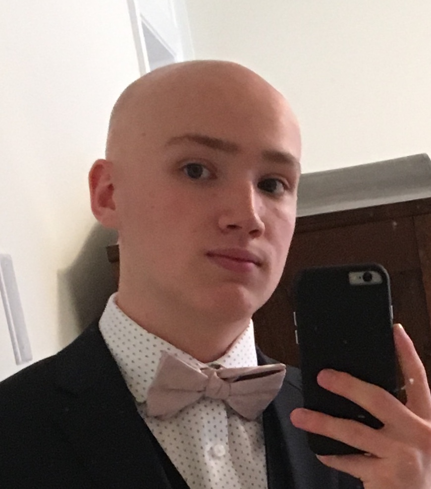

Who am I?
What do you call a bald software engineer student from the University of Ottawa? Cameron Powers. Welcome to my website, I am currently in my first year of software engineering at uOttawa. I am from Newmarket Ontario which is about 45 minutes north of Toronto, with traffic it feels like 2 hours thanks to the DVP bottleneck. Coming to university in Ottawa has been quite the transition but one I was eager to begin. The city of Ottawa has quickly become a second home and one day it may even be my home. On this website you can learn a little about me, my passions, and aspirations.
What do I like?
When I am not busy fixing bugs and infinite loops in my code, I enjoy playing hockey, quidditch, and embarking on new adventures. I have played hockey since I was about 3 years old and disappointed my father who was an all-star goal-scorer back in his hockey days by becoming a goalie. I played my first game as a goalie when I was around 6 years old, got a shutout, and never picked up a player stick again. I lined my walls with Roberto Louongo and Martin Brodeur posters and had my parents pay for expensive goalie equipment. Sorry, Mom and Dad. I also enjoying play golf in the summer and have recently made the UOttawa competitive quidditch team. Yes, quidditch is that sport from Harry Potter; No, it's not a nerd sport. Quidditch is fully contact and is a cross between volleyball, dodgeball and rugby. I made the team back in September and have been having a blast on it. The quidditch community is a lot bigger then many assume, including myself. Quidditch is a very complicated sport and even I don't know all the rules. Within only two months of joining the team, I have taken part in tournaments at McGill and Carleton, and regionals in Oshawa.
Why Software Engineering?
As a kid I always loved playing with Legos. The Star Wars sets were always my favourite as I was a big star wars nerd, and I honestly still am. I loved Legos because I loved building new creations and as I grew older, the passion for build grew with me. When I started high school I had no idea what I wanted to do but in grade 10, I enrolled in a computer science class. In this class we started off learning Turing, and as cliche as it sounds, I quickly fell in love with coding. I always had an interest in computers and tech, which probably stemmed from my video game addiction as a kid. As grade 11 came around we learned HTML and CSS, thanks to this class I am able to build this current website. I enjoyed computer science so much I took grade 12 in my second semester of grade 11 and it opened my door to software engineering. To this day when I see programmers in movies writing lines and lines of code to build facebook or hack into the alien spaceship and shutoff their Anti-Earth-Cannon, I want to do that. The University of Ottawa has given me the means to learn how and I am motivated as ever to find success in the software engineering field.
Contact Me
School Email:
cpowe036@uottawa.ca
Personal Email:
cameronjpowers@gmail.com